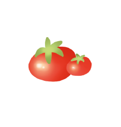
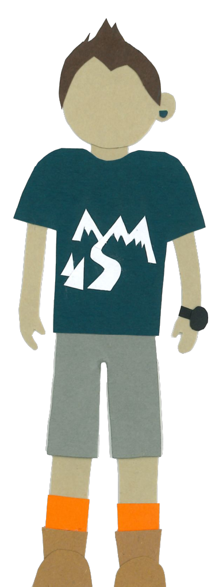

Das Wandernudel-Scoreboard
| Person | Anzahl Stempel |
|---|---|
| Lena |

|
| Thorben |  |
| Jessie |

|
| Jan |

|
Die vier Nudeln sind auf ihrer Quest zum Kaiser*innenstatus. Auf dieser Reise fragt man sich schon mal: Wie weit bin ich überhaupt schon gekommen? Wie viele Stempel brauche ich noch? Und warum führe ich die Rangliste eigentlich nicht an? Oder tue ich das doch? Das Wandernudel-Scoreboard hilft dir, den Überblick zu behalten.